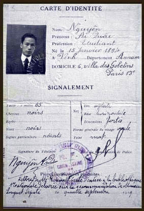

Thẻ căn cước mang tên “Nguyên Ai Quâc”, cấp tại Pháp ngày 04.09.1919.“Yêu sách của nhân dân An Nam”
Ngày 18.06.1919, Nguyễn Ái Quốc thay mặt người Việt Nam yêu nước tại Pháp gửi bản yêu sách 8 điểm tới Hội nghị Versailles, đòi các quyền dân chủ cơ bản.
Tự do báo chí, ngôn luận
Tự do hội họp, lập hội
Bình đẳng trước pháp luật
Cải cách pháp lý & giáo dục
Thực tế: các cường quốc không chấp nhận yêu cầu. Từ đó, Người càng nhận rõ dân tộc bị áp bức không thể trông chờ vào sự ban phát tự do của thực dân.
Tháng 7.1920, Luận cương của Lênin mở ra một lời giải rõ ràng hơn cho vấn đề giải phóng dân tộc.